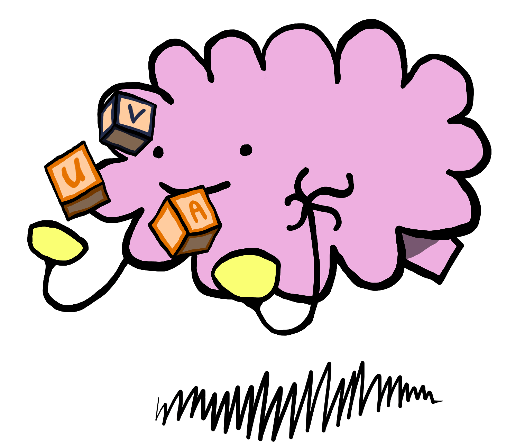

A little about me
Before coming to CAB, I studied, at the University of Pennsylvania. It is here that I fell into my passions for studying the brain and its connectivity. Click on the link to read more about my experience.
Before coming to CAB, I studied, at the University of Pennsylvania. It is here that I fell into my passions for studying the brain and its connectivity. Click on the link to read more about my experience.

You may have noticed that I like to draw brains... Good news if you're a fan! Click the link if you want to see some of my portfolio.